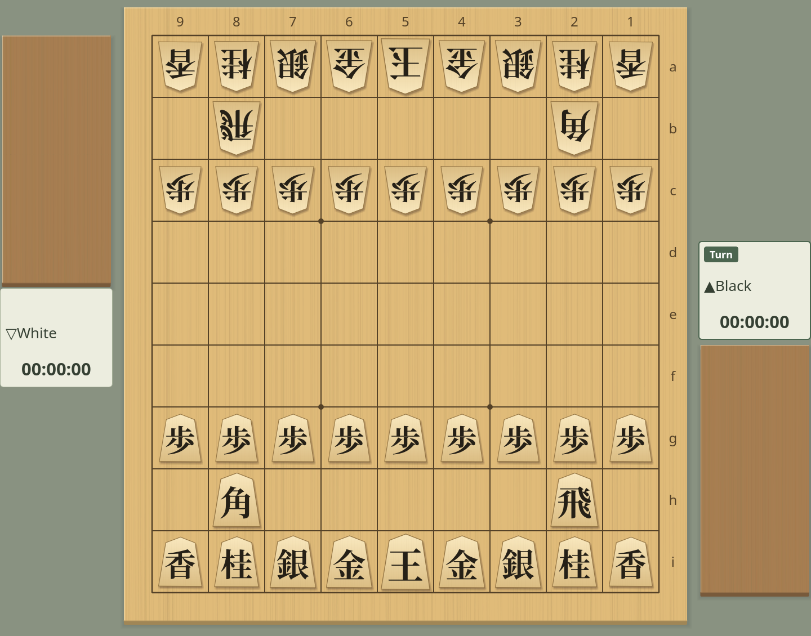
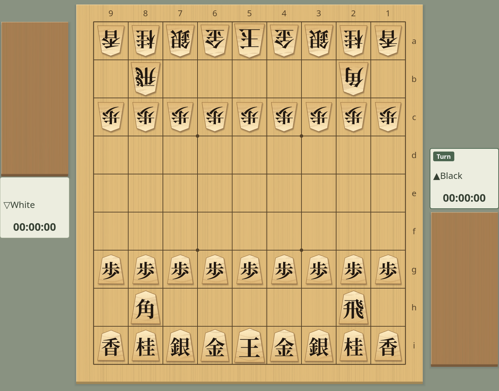
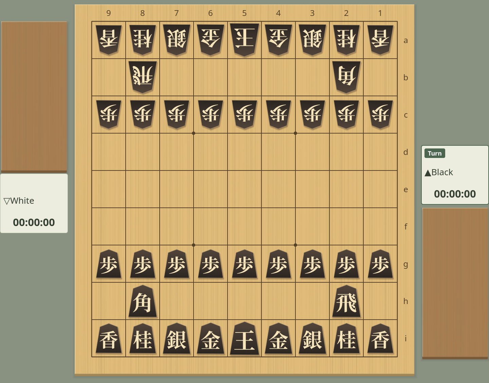
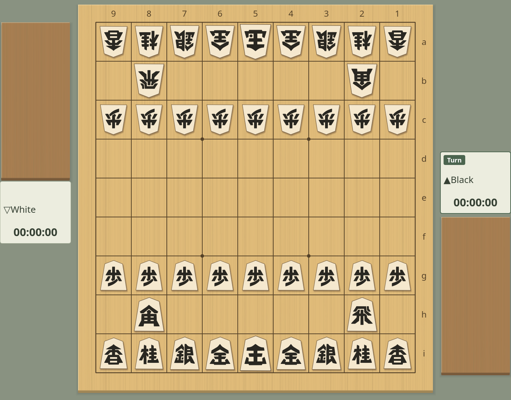

Piece Styles
40 piece styles with a shared traditional shape
Screenshots were captured on Linux with the English interface.
Choose Pieces in the Appearance Window
Open View → Game Appearance… and choose the Pieces tab to select Standard Pieces or one of 39 variations. The additional styles are grouped into Tiger Grain, Natural Wood, Light Colors, Dark Colors, Symbolic, Chess, and Alphabet. Your selection applies immediately and is restored on the next launch.
The former Fine Straight Grain is now Standard Pieces, with its artwork unchanged. The former standard pieces remain available as Wood Grain. If Fine Straight Grain was selected, it switches to Standard Pieces without changing its appearance.
The same pieces appear on every board: the main board, pieces in hand, principal variations, and tsume boards. Adjust colors, piece size, and shadows under Details in Game Appearance.
Standard Pieces
Pale wood, fine outlines, subtle grain, and Mincho lettering


Standard Pieces
Promoted pieces use red lettering. Promoted lance, knight, and silver are marked 杏, 圭, and 全.
20 Variations
Every variation keeps the shape, size, and Mincho lettering of Standard Pieces, with different grain patterns and colors. Standard Pieces remains the default.
| Group | Piece Styles |
|---|---|
| Tiger Grain | Light Tiger Grain, Silk Tiger Grain, Amber Tiger Grain, Red Tiger Grain, Golden Tiger Grain |
| Natural Wood | Pale Wood, Wood Grain, Amber Straight Grain, Bamboo Grain, Walnut |
| Light Colors | Linen, Pale Cherry, Celadon, Moon White, Wisteria Gray |
| Dark Colors | Ebony, Iron Navy, Forest Green, Grape, Ink and Gold |
Light and natural wood pieces use dark lettering, while dark pieces use light lettering. Promoted pieces are distinguished by vermilion or bright red lettering.


Light Tiger Grain


Ebony
Sengoku Kanji
Sengoku Kanji in the Symbolic group has bold, abstract glyphs that combine characters such as 王 and 歩 with samurai helmet shapes. The outlines, relative piece sizes, and player orientations match Standard Pieces.
Ivory surfaces carry ink-black lettering, with vermilion lettering for promoted pieces. Promoted silver, knight, and lance use 全, 圭, and 杏.


Sengoku Kanji
Chess-inspired Pieces: Facet, Atelier, and Ribbon
The Chess group offers nine sets: geometric Facet, sculptural Atelier, and outlined Ribbon, each in Wood, White, and Ink. Crowns, castles, horses, shields, and spears identify the pieces without kanji or letters.
The pentagonal outlines and relative sizes match Standard Pieces. Promoted symbols turn red, and both kings share the same crown. Movement, promotion, and drops follow shogi rules.
Choosing the item with the same name in Suggested Combinations also coordinates the board, stands, and background. Ink pairs a dark board with light piece surfaces.


Alphabet Pieces: Sei, Rin, and Sumi
The Alphabet group offers three Mincho typefaces, Sei, Rin, and Sumi, each in Wood, White, and Ink: nine sets in total. Normal letters are black; promoted pieces keep the same letter in red.
King = K, Rook = R, Bishop = B, Gold = G, Silver = S, Knight = N, Lance = L, and Pawn = P. Both kings use K. The pentagonal outlines and relative sizes match Standard Pieces, with lettering and margins scaled to each piece.
Choosing the item with the same name in Suggested Combinations also gives the board, stands, and background the sample colors. Movement, promotion, and drops follow shogi rules.